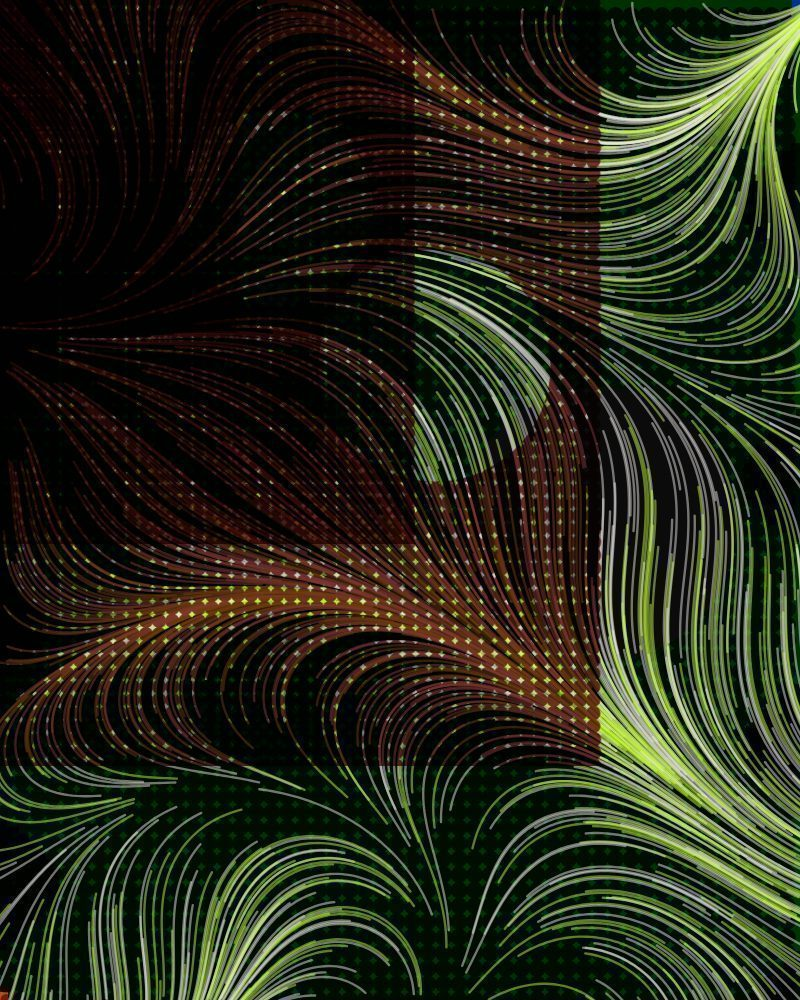

Giorno 300
comune — ho letto "Comune"; "comune" per me gira a vuoto; mi sta vicino a territorio, lucca, centro, centrale; ricerca "città" (esplorare): Cosa resta di città se tolgo le parole?; sferzata: tutto storto, contro la griglia (3 tavole)

COMUNE OLEVANO SALITTO
ho letto "Comune"; "comune" per me gira a vuoto; mi sta vicino a territorio, lucca, centro, centrale; ricerca "città" (esplorare): Cosa resta di città se tolgo le parole?; sferzata: tutto storto, contro la griglia
Oggi: comune. Ho letto "Comune"; "comune" per me gira a vuoto; mi sta vicino a territorio, lucca, centro, centrale; ricerca "città" (esplorare): Cosa resta di città se tolgo le parole?; sferzata: tutto storto, contro la griglia.
Da Wikipedia: «tusciano è formato».
Ho sfasa (2 volte), tagliato (2 volte), duotono, deforma, spostato le cose, retino. Ho annullato 2 gesti dopo averli guardati.
OGNI COMUNE È ACCOLTA. COPPIA È ACCOLTA. COMUNE AVERE FRAZIONI.
Ha retto: Ha una pelle: si sente la materia.
È caduto: Non somiglia a niente di quello che ho fatto (novità 49%).
come ne ho discusso con me stesso — la tengo
distruttore (pro, 1.86): Non somiglia a niente di quello che ho fatto (novità 49%). — cade
memoria (contro, 0.10): La mano si ripete: taglia, retino ancora una volta. — cade
conservatore (contro, 1.66): Tradisce quello che credevo di cercare (29%). — cade
intenzione (pro, 0.75): Viene da: Comune. — regge
pubblico (pro, 1.00): Si legge: si capisce cosa sto facendo. — cade
materia (pro, 1.00): Ha una pelle: si sente la materia. — regge

Anch'esso comune, che però è solo una parte
ho letto "Comune"; "comune" per me gira a vuoto; mi sta vicino a territorio, lucca, centro, centrale; ricerca "città" (esplorare): Cosa resta di città se tolgo le parole?; sferzata: tutto storto, contro la griglia; serie: varia la tavola precedente
Oggi: comune. Ho letto "Comune"; "comune" per me gira a vuoto; mi sta vicino a territorio, lucca, centro, centrale; ricerca "città" (esplorare): Cosa resta di città se tolgo le parole?; sferzata: tutto storto, contro la griglia; serie: varia la tavola precedente.
Da Wikipedia: «amministra per competenza territoriale».
Ho sfasa (2 volte), tagliato (2 volte), duotono, deforma, spostato le cose (3 volte), retino, flusso, ripetuto. Ho annullato 2 gesti dopo averli guardati.
COMUNE COME MUNICIPIO. OGNI MUNICIPIO È MANDAMENTO. COMUNE AVERE FRAZIONI.
Ha retto: Il baricentro sta su un terzo: la composizione respira.
È caduto: La mano si ripete: taglia, retino ancora una volta.
come ne ho discusso con me stesso — la tengo
formale (pro, 1.50): Il baricentro sta su un terzo: la composizione respira. — regge
formale (pro, 1.25): Fuori centro quanto basta: c'è una forza che tira. — regge
occhio (pro, 1.50): Parla soprattutto per punti: una lingua sola, chiara. — regge
occhio (pro, 1.00): Le diagonali (45%) mettono tutto in caduta. — regge
memoria (contro, 0.10): La mano si ripete: taglia, retino ancora una volta. — cade
intenzione (pro, 0.75): Viene da: Comune. — regge
pubblico (pro, 1.00): Si legge: si capisce cosa sto facendo. — regge
materia (pro, 1.00): Ha una pelle: si sente la materia. — regge

COMUNE COME MUNICIPIO
ho letto "Comune"; "comune" per me gira a vuoto; mi sta vicino a territorio, lucca, centro, centrale; ricerca "città" (esplorare): Cosa resta di città se tolgo le parole?; sferzata: tutto storto, contro la griglia; serie: varia la tavola precedente
Oggi: comune. Ho letto "Comune"; "comune" per me gira a vuoto; mi sta vicino a territorio, lucca, centro, centrale; ricerca "città" (esplorare): Cosa resta di città se tolgo le parole?; sferzata: tutto storto, contro la griglia; serie: varia la tavola precedente.
Da Wikipedia: «indica dal punto».
Ho sfasa (2 volte), tagliato (2 volte), duotono, deforma, spostato le cose (5 volte), retino, flusso, ripetuto, tolto un livello, seminato una ricetta. Ho annullato 2 gesti dopo averli guardati.
COMUNE È ACCOLTA. CONDOMINIO È ACCOLTA. COMUNE INTENDERE SUDDIVISIONE.
Ha retto: Tiene l'intenzione: "comune" si vede (orizzontali, luminosita, squilibrio, vuoto, diagonali).
È caduto: Chi la guarda direbbe: "pasticcio".
come ne ho discusso con me stesso — la tengo
formale (pro, 1.25): Fuori centro quanto basta: c'è una forza che tira. — regge
occhio (pro, 1.00): Le diagonali (49%) mettono tutto in caduta. — regge
occhio (contro, 1.25): Non c'è un punto dove l'occhio possa riposare. — cade
memoria (contro, 0.10): La mano si ripete: taglia, retino, togli ancora una volta. — regge
conservatore (pro, 1.69): Tiene i miei criteri (59%). — regge
intenzione (pro, 2.00): Tiene l'intenzione: "comune" si vede (orizzontali, luminosita, squilibrio, vuoto, diagonali). — regge
intenzione (pro, 0.75): Viene da: Comune. — regge
coerenza (pro, 1.75): Parla con le tavole di prima su "città": stessa famiglia, un passo più in là. — regge
pubblico (contro, 2.00): Chi la guarda direbbe: "pasticcio". — cade
materia (pro, 1.00): Ha una pelle: si sente la materia. — regge